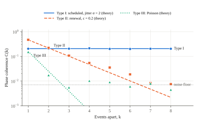
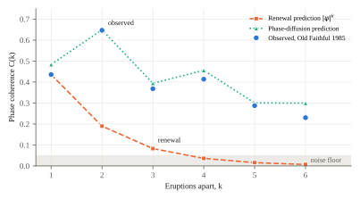

Phase, Memory and Waiting in “Every X Minutes” Claims
SNVRKOTICS LLC · snvrk@snvrkotics.com
“An event happens every X minutes” reads as a timetable, but a timetable needs two numbers: an interval and the minute it starts. The second is never given, so a claim that sounds testable cannot be checked against a clock. We resolve this paradox and show that it hides two measurable quantities that such claims always omit. First, we prove that a well-defined start minute (phase) exists exactly when the first Fourier coefficient of the process’s intensity at period X is nonzero; for every stationary process, including the pooled processes behind public statistics, it is zero and the start minute does not exist. When it does exist, it is recoverable from event times alone, with a closed-form standard error and a detection threshold of about 4.8/ρ2 events, both confirmed by simulation. Second, we introduce phase memory: how many events into the future an “every X” schedule stays predictable. We show that memory is governed by a single function, the variance of the time spanned by k consecutive intervals, which sorts all such processes into three types: scheduled (memory never fades), renewal (memory fades geometrically) and pooled (memory is gone after one event). Applied to the most famous “every X minutes” claim there is, Old Faithful geyser, the theory finds something a renewal model misses: in the 1985 record of 299 consecutive eruptions, the geyser keeps time 2.6 times more regularly over two eruptions than over one, and remembers its phase for about 5.4 eruptions (6.6 hours) rather than the 1.2 a renewal model predicts. A one-line phase-diffusion law predicts the observed coherence at every lag. Finally, we show by Palm calculus that the mean wait from a random moment is (X/2)(1 + c2) for any stationary process, renewal or not. Every “every X minutes” claim should therefore come with two more numbers: its coefficient of variation and its phase memory.
Keywords: point processes; phase estimation; cyclostationarity; circular statistics; renewal theory; Palm calculus; inspection paradox; statistical communication; Old Faithful
“A baby is born every few seconds.” “Someone is diagnosed every few minutes.” “Old Faithful erupts every hour and a half.” The form is everywhere because it turns an abstract total into something a reader can feel happening; the U.S. Census Bureau’s population clock expresses births, deaths and net migration each as one event every so many seconds [1]. It also invites a question that is almost never asked. A train that leaves every ten minutes leaves at particular minutes: :03, :13, :23. Its timetable needs an interval and an offset. A statistic that gives the interval alone is, read literally, half a timetable. We call the missing half the phase, and the impossibility of checking the claim without it the phase problem.
The phase problem looks like a quibble about wording. We argue it is a window onto two quantities that “every X” claims systematically leave out, each of which changes what a reader should expect: whether the next event can be predicted at all, and how long they will wait for it. This paper makes four contributions.
Section 2 states the paradox. Sections 3 to 5 develop the theory, Section 6 tests it by simulation, Section 7 applies it to Old Faithful, and Section 8 turns it into guidance for writing such claims. Proofs are in Appendix A.
Let S be the statement “an event occurs every X minutes.” Its literal reading is a strictly periodic point process,
with phase φ ∈ [0, X). Checking S means checking event times against Eq. (1), which requires φ, which S withholds:
A statement whose literal content is a timetable cannot be compared with any timetable, because half of the timetable is withheld. It sounds falsifiable, but as phrased it can’t be checked.
Three readings of S are possible. Under the periodic reading, the phase is real but unstated. Under the rate reading, X = T/N is a reciprocal average over a window, with no claim of regularity. Under the aggregate reading, events come from many independent sources (people, places, institutions) pooled into one count. We show that the paradox dissolves under all three, and that what remains is more interesting than the paradox.
Let N be a simple point process on ℝ with intensity λ(t), and write ω = 2π/X. Define the first Fourier coefficient of the intensity at period X,
and call φ = (X/2π) arg c1 the phase of the process at period X when c1 ≠ 0.
Theorem 1 (identifiability). The phase of a point process at period X is well defined if and only if c1 ≠ 0. In particular: (a) for a strictly periodic process, c1 = eiωφ/X and the phase is the offset in Eq. (1); (b) for any stationary process, λ is constant, c1 = 0 and no phase exists; (c) a process with c1 ≠ 0 must be cyclostationary at period X, that is, its intensity must vary systematically with time modulo X.
Theorem 1 settles the aggregate reading. By the Palm–Khintchine theorem, the superposition of many independent, sparse point processes tends to a Poisson process whatever its components look like [5, 6]. A Poisson process with constant rate is stationary, so by Theorem 1(b) it has no phase. For pooled statistics such as “someone, somewhere, every X minutes,” the question “starting at which minute?” has no answer, because no minute is distinguished. The rate reading is settled the same way: X = T/N contains no clock times at all.
The periodic reading remains. If a phase exists, can an observer find it? Map each event time to an angle θk = ω tk mod 2π and form the empirical Fourier coefficient
This is the mean resultant of circular statistics [7, 13] and the basis of pulsar timing, where the arrival phase of the first recorded photon is likewise unknown [8, 9]. Let ρ = E[cos(θ − ωφ)] be the population concentration and ρ2 = E[cos 2(θ − ωφ)].
Theorem 2 (recovery). For N independent event phases with ρ > 0, φ̂ is consistent, with asymptotic standard error
The Rayleigh statistic Z = 2NR2 is approximately χ2 with two degrees of freedom when ρ = 0 and noncentral χ2 with noncentrality 2Nρ2 otherwise, so detecting the phase at α = 0.05 with 80% power requires about
Two cases cover most applications. A schedule with independent Gaussian timing errors of standard deviation σ has ρ = exp(−2π2σ2/X2) and ρ2 = ρ4. A Poisson process whose rate is modulated as λ0[1 + κ cos(ωt − ωφ)] has ρ = κ/2 and ρ2 = 0. The paradox is therefore resolved in both directions. If the claim is literally periodic, the phase is not missing: it is an output of the data, not an input the claimant must supply. If the claim is not periodic, the phase does not exist.
Theorem 1 asks whether a process has a phase over all time. A sharper practical question is local: if I know when one event happened, how well can I predict the phase of an event k events later? Define the phase coherence at lag k,
estimated by averaging over all pairs k events apart. C(k) = 1 means the event k steps ahead falls at a perfectly predictable phase; C(k) ≈ 0 means its phase is uniformly uncertain. Write Sk = tj+k − tj for the time spanned by k consecutive intervals, so that C(k) = |E eiωSk| is the modulus of its characteristic function at ω.
Proposition 3 (phase diffusion). If Sk is approximately Gaussian,
Hence phase memory is governed by how fast Var(Sk) grows with k, which defines three types. Type I (scheduled): events are a fixed schedule plus independent errors; Var(Sk) = 2σ2 for every k ≥ 1, so C(k) = ρ2 is constant and memory never fades. Type II (renewal): intervals are independent with variance s2; Var(Sk) = ks2, and exactly C(k) = |ψ(ω)|k, where ψ is the interval characteristic function: memory fades geometrically. Type III (pooled): the Poisson limit, |ψ(ω)| = (1 + 4π2)−1/2 ≈ 0.157, so memory is gone after one event. For any stationary interval sequence with long-run variance D = s2(1 + 2Σj≥1 rj), where rj are the interval autocorrelations, the phase memory length is
the number of events over which coherence falls by a factor of e.
Equation (8) carries the paper’s central intuition. Two processes can share the same X and the same interval variability s, yet have very different memory, because memory depends on whether consecutive intervals compensate one another (r1 < 0, a long gap tends to follow a short one) or compound (r1 > 0). A renewal model, which assumes rj = 0, can be wrong about predictability in either direction even when it fits the interval distribution perfectly.
A reader told that something happens every 10 minutes, arriving at a random moment, expects to wait about 5. That expectation is right only for a perfect schedule. The general answer is the inspection paradox: a random moment is more likely to land in a long interval than a short one [3, 4].
Proposition 4 (waiting law). For any stationary, ergodic, simple point process whose Palm interval distribution has mean X and coefficient of variation c, the mean wait from a random moment to the next event, and the mean length of the interval containing that moment, are
For renewal processes this is classical. The point of Proposition 4 is that it does not need renewal: it follows from the Palm inversion formula [14, 15], so it holds for scheduled processes with jitter, for processes with correlated intervals such as Old Faithful, and, by time averaging, for cyclostationary ones. We call 1 + c2 the inspection multiplier: the factor by which the true mean wait exceeds the naive X/2.
All simulations use a fixed seed and are reproduced by the code accompanying this paper. Table 1 repeats the comparison of version 1 of this paper: four processes that all average “one every 10 minutes” over 100,000 minutes.
| Process | Events | T/N | c | R at X | p | Mean wait | Straddle | (X/2)(1+c2) |
|---|---|---|---|---|---|---|---|---|
| A. Periodic, unknown phase | 10,000 | 10.00 | 0.00 | 1.000 | < 10−300 | 5.01 | 10.00 | 5.00 |
| B. Poisson | 10,014 | 9.99 | 1.00 | 0.019 | 0.031 | 9.96 | 19.92 | 9.95 |
| C. Pooled, 50 periodic sources | 9,919 | 10.08 | 1.00 | 0.003 | 0.93 | 10.02 | 20.10 | 10.04 |
| D. Poisson with daily cycle | 9,926 | 10.07 | 1.12 | 0.009 | 0.44 | 11.36 | 22.77 | 11.37 |
Table 1. Four processes that all happen “every 10 minutes” (minutes throughout). The undisclosed phase of A was recovered to within 10−9 minutes.
Three results stand out. The rate is recovered in every case. A phase is found only where Theorem 1 says one exists; the nominally significant p = 0.031 for the Poisson process is the 1-in-20 false positive expected at α = 0.05, and its concentration R = 0.019 is negligible, a reminder that a single marginal test establishes nothing [12]. And the waiting law predicts every row, including D, which is not stationary but cyclostationary.
Table 2 compares the standard error predicted by Eq. (4) with the spread of 400 replicate estimates for each design.
| Design | N | ρ (theory) | R (mean) | SE, simulated | SE, Eq. (4) | 2Nρ2 |
|---|---|---|---|---|---|---|
| Schedule, jitter σ = 1 | 100 | 0.821 | 0.821 | 0.101 | 0.101 | 135 |
| Schedule, jitter σ = 1 | 1,000 | 0.821 | 0.821 | 0.030 | 0.032 | 1,348 |
| Schedule, jitter σ = 2 | 100 | 0.454 | 0.460 | 0.235 | 0.243 | 41 |
| Schedule, jitter σ = 2 | 1,000 | 0.454 | 0.456 | 0.075 | 0.077 | 412 |
| Schedule, jitter σ = 3 | 100 | 0.169 | 0.185 | 0.769 | 0.665 | 6 |
| Schedule, jitter σ = 3 | 1,000 | 0.169 | 0.172 | 0.200 | 0.210 | 57 |
| Modulated Poisson, κ = 1 | 100 | 0.500 | 0.507 | 0.223 | 0.225 | 50 |
| Modulated Poisson, κ = 1 | 1,000 | 0.500 | 0.502 | 0.071 | 0.071 | 500 |
| Modulated Poisson, κ = 0.5 | 100 | 0.250 | 0.254 | 0.451 | 0.450 | 13 |
| Modulated Poisson, κ = 0.5 | 1,000 | 0.250 | 0.251 | 0.128 | 0.142 | 125 |
| Modulated Poisson, κ = 0.2 | 100 | 0.100 | 0.127 | 1.417 | 1.125 | 2 |
| Modulated Poisson, κ = 0.2 | 1,000 | 0.100 | 0.102 | 0.388 | 0.356 | 20 |
Table 2. Phase standard errors (minutes, X = 10), 400 replicates per row.
The prediction is within about 10% of the simulated spread whenever 2Nρ2 ≳ 10, that is, once the phase is detectable at all, and becomes optimistic below that, as an asymptotic formula should. The mean resultant R is biased upward when Nρ2 is small, by the familiar amount of order 1/√N. For detection, Eq. (5) gives N* = 20, 54, 167 and 482 events for ρ = 0.5, 0.3, 0.17 and 0.1; in 2,000 replicates each, the Rayleigh test detected the phase with power 0.88, 0.83, 0.80 and 0.79, against the design target of 0.80.

Figure 1 confirms the taxonomy. The scheduled process keeps C(k) between 0.198 and 0.212 at every lag against the predicted 0.206; the renewal process tracks |ψ|k (0.467, 0.220, 0.107, 0.054 against 0.465, 0.216, 0.101, 0.047) until it meets the noise floor; the Poisson process falls from 0.151 (theory 0.157) to the floor at once. The waiting law holds for the non-renewal Type I process as well: with c = 0.284, simulated wait 5.39 minutes against 5.40 predicted, and straddling interval 10.80 against 10.80.
Old Faithful in Yellowstone National Park is the canonical “every X minutes” phenomenon, famous precisely for its supposed regularity. We analyze the record of Azzalini and Bowman [16]: 299 consecutive intervals between 300 eruptions, observed continuously from 1 to 15 August 1985, as distributed with the MASS package for R [17, 18]. Event times are reconstructed by cumulating the intervals.
| Quantity | Value |
|---|---|
| Record | 300 eruptions over 15.0 days |
| Mean interval X (“every X minutes”) | 72.3 min |
| Interval SD, coefficient of variation c | 13.9 min, 0.192 |
| Range; share of intervals under 65 min | 43–108 min; 31% |
| Lag-1 to lag-4 interval autocorrelation | −0.70, +0.55, −0.45, +0.39 |
| Mean wait from a random moment: naive X/2 · Eq. (9) · observed | 36.2 · 37.5 · 37.4 min |
| Interval containing a random moment: Eq. (9) · observed | 75.0 · 74.9 min |
| CV of the time spanned by two eruptions | 0.074 |
| Long-run diffusion D per eruption (vs. renewal s2 = 192) | 48.7 min2 (0.25 ×) |
| Phase memory: renewal model · Eq. (8) | 1.2 · 5.4 eruptions (6.6 h) |
| Rayleigh test at X over all 15 days | R = 0.128, p = 0.007 |
Table 3. Old Faithful, 1–15 August 1985.

| Lag k (eruptions) | 1 | 2 | 3 | 4 | 5 | 6 |
|---|---|---|---|---|---|---|
| Observed C(k) | 0.436 | 0.647 | 0.368 | 0.414 | 0.287 | 0.230 |
| Renewal prediction |ψ̂|k | 0.436 | 0.190 | 0.083 | 0.036 | 0.016 | 0.007 |
| Phase diffusion, Eq. (7) | 0.484 | 0.649 | 0.394 | 0.456 | 0.301 | 0.300 |
| Var(Sk), min2 (renewal: k × 192) | 192 | 115 | 247 | 208 | 318 | 319 |
Table 4. Old Faithful phase coherence by lag. Uniform-phase noise floor ≈ 0.05.
Four findings follow.
The waiting law holds on real data. With c = 0.192 the inspection multiplier is only 1.037, so a visitor waits 37.5 minutes on average rather than the naive 36.2; the observed 37.4 matches Eq. (9). Old Faithful earns its name in this sense: its multiplier is close to the scheduled ideal of 1.
Old Faithful is not a renewal process. Its intervals alternate, with autocorrelations of −0.70, +0.55, −0.45 and +0.39 at lags 1 to 4: a short wait tends to be followed by a long one and vice versa. This is consistent with the well-documented dependence of each interval on the preceding eruption’s duration [16].
It keeps better time over two eruptions than over one. Because consecutive intervals compensate, the time spanned by two eruptions varies less than the time spanned by one: Var(S2) = 115 min2 against Var(S1) = 192, a coefficient of variation of 0.074 against 0.192. Coherence therefore rises from 0.44 at one eruption to 0.65 at two. No renewal process can do this: under renewal, C(2) = C(1)2 always.
Its phase memory is 4.5 times what a renewal model predicts. Fitted to the same intervals, a renewal model predicts that coherence falls to the noise floor within four eruptions and gives a memory length of 1.2 eruptions. The observed coherence is still 0.23 at six eruptions, the long-run diffusion is only a quarter of the renewal value, and Eq. (8) gives a memory length of 5.4 eruptions, about 6.6 hours. Across all 15 days, a faint residual phase remains detectable (R = 0.128, p = 0.007). The phase-diffusion law of Proposition 3, computed from nothing but the observed Var(Sk), reproduces the observed coherence at every lag (Table 4, Figure 2). At lag 1, where the interval distribution is strongly bimodal and far from Gaussian, the law overstates coherence modestly (0.48 against 0.44); from lag 2 on, as sums of intervals become more nearly Gaussian, it is within 0.04 at lags 2 to 5 and within 0.07 at lag 6.
For a visitor, the practical reading is that “every 72 minutes” is the wrong summary of Old Faithful’s timekeeping. A better one is “every 145 minutes, two eruptions at a time,” which is 2.6 times as precise.
The analysis reduces to a short recommendation. An “every X minutes” claim states one number; the reader needs up to three.
1. Say “on average,” and give the count and window. “About N per year in [population], or one every X minutes on average” signals the rate reading, lets readers check the arithmetic, and reports what was actually measured. Best [2] documents how figures stripped of their denominator mutate as they are repeated.
2. Report the coefficient of variation c. It sets the expected wait through the inspection multiplier 1 + c2: 1 for a schedule, 2 for pooled events.
3. When predictability matters, report the phase memory ℓ. It says how many events ahead the schedule can be trusted: forever for a timetable, about five eruptions for Old Faithful, one event or fewer for anything pooled.
For genuinely scheduled processes (departures, automated jobs) the advice inverts: state the phase, because it exists and it is what the reader needs.
Theorems 1 and 2 are stated for well-behaved processes (locally integrable intensity; independent event phases in Theorem 2), and the standard error of Eq. (4) is asymptotic, within about 10% in our simulations once 2Nρ2 ≳ 10. Theorem 1 is in part a definition: it takes the first harmonic as the meaning of “phase at period X.” A process with c1 = 0 but a nonzero higher harmonic would have structure at X that this definition calls phaseless; we do not pursue that case. Proposition 3 is exact only for Gaussian spans and is an approximation otherwise, as the lag-1 discrepancy for Old Faithful shows; the memory length of Eq. (8) uses a long-run variance estimated from the slope of Var(Sk) over lags 10 to 30, which a 299-interval record supports only roughly. The Old Faithful analysis rests on a single fifteen-day record from 1985; the geyser’s behavior is known to change over time, and our findings describe that record, not the geyser today. The reconstruction of event times assumes the record is complete, as its authors describe it. Finally, we test no specific published statistic; the guidance of Section 8 is a proposal, not an evaluation of any existing figure.
“Every X minutes” seems to withhold half of a timetable. On inspection, the missing minute either can be measured from the events themselves or does not exist; which of the two is decided by a single Fourier coefficient. But the phrase withholds two other things that do exist and do matter: how irregular the process is, which sets how long anyone actually waits, and how long it remembers its own rhythm, which sets how far ahead it can be predicted. Old Faithful, the emblem of regularity, shows why the second matters: judged one interval at a time, it looks only moderately regular; judged by its memory, it is a far better clock than a renewal model allows, because each eruption corrects the last. The missing minute was never the problem. The missing numbers were.
Code, data and both versions of this paper: https://github.com/snvrk/missing-minute. Version 1 simulations (Table 1): code/sim.py. Theory checks, Old Faithful analysis (Tables 2–4) and figures: code/analysis.py and code/figures.py, seed 20261003; all numbers are written to results/results.json and results/results2.json. Data: data/geyser.csv, the Azzalini–Bowman record as distributed in R’s MASS package, obtained from the Rdatasets collection [18].
Drafting of this paper and its analysis code was assisted by an AI writing tool; the author reviewed the result and is responsible for its content. No external funding was received, and the author declares no competing interests.
Theorem 1. For a periodic process, λ(t) = Σk δ(t − φ − kX), so (1/T)∫0T λ(t)eiωtdt = (1/T)Σk eiω(φ+kX) = eiωφ·(number of events in [0, T])/T → eiωφ/X, because eiωkX = 1; this gives (a). If λ ≡ λ0, the integral is λ0(eiωT − 1)/(iωT) → 0, giving (b). For (c), if λ is X-periodic, c1 is its first Fourier-series coefficient, which is nonzero only if λ is non-constant modulo X; in general, a nonzero limit in Eq. (2) is by definition a first-order cyclic component at frequency 1/X [19]. The phase is defined as arg c1, and no other functional of the first-order intensity distinguishes one offset from another, which gives the “only if.”
Theorem 2. Write uk = θk − ωφ. The resultant’s component along the true direction has mean Nρ; the perpendicular component Σ sin uk has mean 0 (by symmetry of the phase distributions considered) and variance NE[sin2u] = N(1 − ρ2)/2. To first order the angular error is the ratio of the perpendicular to the parallel component, with variance (1 − ρ2)/(2Nρ2); multiplying by X/2π gives Eq. (4) [7, 13]. Under ρ = 0 the two components are asymptotically independent normals with variance N/2, so 2NR2 → χ22; under ρ > 0 it is approximately noncentral χ22 with noncentrality 2Nρ2. The noncentrality giving power 0.80 against the 0.95 quantile (5.99) is 9.63, so N* = 9.63/(2ρ2) = 4.82/ρ2. For Gaussian jitter, E[eiu] = exp(−ω2σ2/2), giving ρ = exp(−2π2σ2/X2) and ρ2 = ρ4. For the modulated Poisson process the phase density is (1 + κ cos u)/2π, so ρ = κ/2 and ρ2 = 0.
Proposition 3. For Gaussian Sk, |EeiωSk| = exp(−ω2Var(Sk)/2) exactly. Type I: tj = φ + jX + εj with independent errors gives Sk = kX + εj+k − εj, so C(k) = |Eeiωε|2 = ρ2 for every k ≥ 1, without any Gaussian assumption. Type II: independent intervals give EeiωSk = ψ(ω)k exactly. For gamma intervals with shape a and mean X, |ψ(ω)| = (1 + (2π/a)2)−a/2; a = 1 is the Poisson case. For a stationary interval sequence, Var(Sk) = s2[k + 2Σj<k(k − j)rj] ~ kD for large k, so C(k) ≈ exp(−kω2D/2), which falls by a factor of e over ℓ = 2/(ω2D) events. Compensating intervals make Var(Sk) grow more slowly than ks2, and can make it fall with k at small lags, as Old Faithful’s Var(S2) < Var(S1) shows.
Proposition 4. For a stationary ergodic simple point process with intensity 1/X, the Palm inversion formula gives, for any non-negative functional f, E[f(N)] = (1/X)E0[∫0I0 f(θsN)ds], where I0 is the interval following the event at the origin under the Palm distribution and θs is the shift [14, 15]. Taking f as the forward recurrence time gives E[W] = (1/X)E0[∫0I0(I0 − s)ds] = E0[I02]/(2X) = (X/2)(1 + c2); taking f as the length of the covering interval gives E0[I02]/X = X(1 + c2). No independence between intervals is used.
Table 1: window 100,000 minutes; (A) tk = φ + 10k, φ ~ U(0, 10) withheld from the estimator; (B) homogeneous Poisson, rate 1/10; (C) 50 periodic sources with periods 500 × U(0.9, 1.1) and uniform phases, merged; (D) thinning [10] of a Poisson process of rate 1.5/10 with acceptance (1 + 0.5 sin(2πt/1440))/1.5. Waiting measures: 200,000 uniform inspection moments. Table 2: 400 replicates per design, each with a fresh uniform phase; modulated designs draw event phases from (1 + κ cos u)/2π by rejection. Detection: 2,000 replicates per ρ at N = N*. Figure 1: 20,000 events per type; Type I jitter σ = 2; Type II gamma intervals with shape 25 (c = 0.2); Type III exponential intervals.